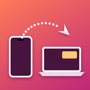

Toss
Share anything from your iPhone to your Linux, Windows or Mac computer.
Tap Share → Toss on a photo, a web page, a note or a file, and it pops up on your computer a second later: links open in the browser, text lands on the clipboard, photos and files go to your Downloads folder.
Everything goes straight from your phone to your computer over your own network, encrypted. There's no account and no cloud.
It works the other way too: right-click a file and choose Send to iPhone, or run
toss send report.pdf, and it's waiting in the Toss app the next time you open it. Back Tap
and Shortcuts can send your clipboard, and toss web opens a page with everything you've received.
Set up in a minute
- Install Toss on your computer.
Linux or Mac: in a terminal
curl -fsSL https://github.com/honza03210/toss/releases/latest/download/install.sh | shWindows: in PowerShellirm https://github.com/honza03210/toss/releases/latest/download/install.ps1 | iexInstalls for your user only and starts with your session. No administrator rights needed (Windows asks once, if you agree, to let Toss through the firewall). Or download it from the releases page. - Get the Toss app on your iPhone from the App Store.
- Pair: run
toss pairon the computer and scan the QR code with the iPhone's Camera. That's it: share something and pick Toss.
Questions
The phone can't reach the computer. Both need to be on the same network. Some
networks (guest Wi-Fi, campus networks) block devices from talking to each other; a phone hotspot
works. Run toss status to check that Toss is running. With a firewall on Linux:
sudo ufw allow 47800/tcp.
Toss isn't in the share sheet. Scroll the row of apps to the end, tap More and turn Toss on.
Where do files go? Downloads/From iPhone. Change it with
toss config dir <folder>; run toss help for all settings.
Why does something sent from the computer wait until I open Toss? iPhones only let apps receive in the background through Apple's push servers, and Toss doesn't use any server. Opening Toss, or running its "Get Files from Computer" Shortcut (for example as an automation), picks everything up.
Uninstall. toss uninstall, then delete the program
(~/.local/bin/toss or %LOCALAPPDATA%\Programs\Toss).
Support
Found a bug or have an idea? Open an issue on GitHub.